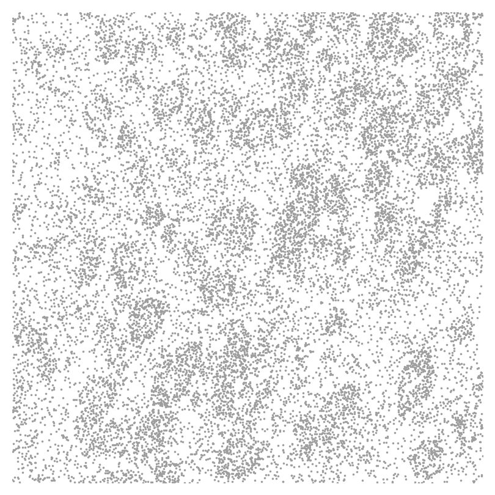
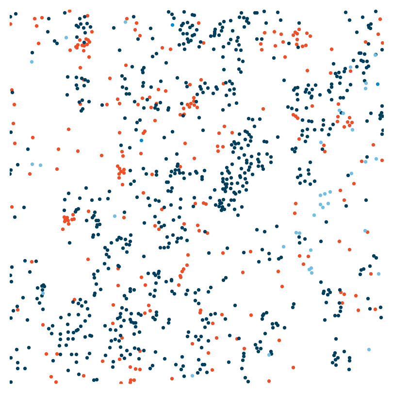
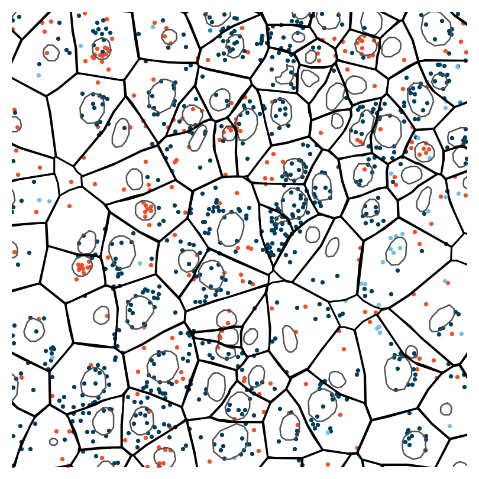

The data
Zooming in: from molecules to cells
Data
QC
Filter
Normalize
Cluster
Markers

1 · Every dot is one molecule
All decoded gene transcripts in the window. Nuclei already show up as denser clumps.

2 · Each dot has a gene
Slc17a7 (neurons)
Mobp (oligodendrocytes)
Gad1
Gfap

3 · Segmentation draws cells
Nuclei (grey) are found on the DAPI image and expanded into cells (black). Molecules inside a polygon are counted for that cell.
One window = 150 × 150 µm of cortex. Only 29% of the gene molecules lie inside a nucleus; the rest are assigned by the expansion.
Data: Practical 2 Xenium section, window x 4800-4950 µm, y 900-1050 µm; transcripts.parquet, cell_ and nucleus_boundaries.parquet (overlaps_nucleus column).